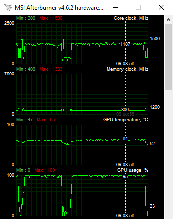
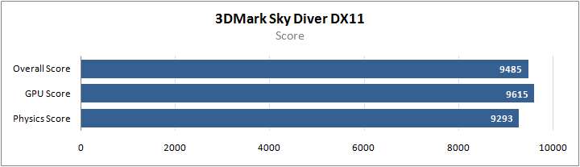
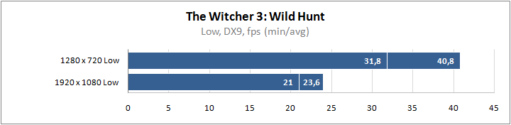

Acer продолжает радовать нас новыми моделями в семействе ультрабуков Acer Swift. Acer continues to delight us with new models in the Acer Swift ultrabook family. Для тех, кто ищет экономичное компактное устройство, компания приготовила сюрприз в виде Swift SF314-42 на базе нового 7-нм процессора AMD Ryzen 5 4500U. For those who are looking for an economical compact device, the company has prepared a surprise in the form of Swift SF314-42 based on the new 7-nm AMD Ryzen 5 4500U processor. С этой новинкой мы и познакомимся в данном обзоре. We will get acquainted with this new product in this review. Посмотрим, на что способен новый гибридный процессор AMD и проверим возможности интегрированной графики. Let's see what the new AMD hybrid processor is capable of and check the capabilities of integrated graphics.
Acer Swift SF314-42 Acer Swift SF314-42
Серия ноутбуков Acer Swift является оптимальным решением для работы благодаря компактным размерам и хорошей производительности. Acer Swift Notebook PC Series is the ideal solution for your work due to its compact size and good performance. Acer Swift SF314-42 в полной мере отвечает этому определению. Acer Swift SF314-42 fully meets this definition. Перед нами небольшой тонкий ультрабук с дисплеем 14 дюймов. Before us is a small thin ultrabook with a 14-inch display. Новый процессор AMD Ryzen 5 4500U обеспечивает высокую производительность благодаря шести ядрам и встроенной графике Vega. The new AMD Ryzen 5 4500U processor delivers high performance with six cores and integrated Vega graphics. И все это сочетается с высокой экономичностью и низким тепловыделением за счет прогрессивного 7-нм техпроцесса. And all this is combined with high efficiency and low heat due to the progressive 7-nm process technology. Габариты корпуса 323x219 мм при толщине 16 мм и массе 1,2 кг. Case dimensions 323x219 mm with a thickness of 16 mm and a weight of 1.2 kg. То есть данный ультрабук компактнее и легче многих товарищей из семейства Swift 3. Он занимает мало места на столе и в случае поездок не является лишним обременительным грузом. That is, this ultrabook is more compact and lighter than many friends from the Swift 3 family. It takes up little space on the table and in case of travel is not an extra burdensome load.
Полные характеристики устройства в таблице. Full characteristics of the device in the table.
| Модель Model | Acer Swift 3 SF314-42 Acer Swift 3 SF314-42 |
|---|---|
| Сайт производителя Products webpage | acer.com acer.com |
| Процессор CPU | AMD Ryzen 5 4500U 2,3 ГГц (до 4000 МГц в Boost-режиме) AMD Ryzen 5 4500U 2.3 GHz (up to 4000 MHz in Boost mode) |
| Оперативная память RAM | 8 ГБ, LPDDR4-3200 8 GB, LPDDR4-3200 |
| Дисплей Display | 14″, 1920x1080, IPS (AU Optronics B140HAN04.0) 14 ″, 1920x1080, IPS (AU Optronics B140HAN04.0) |
| Видеокарта Video card | Radeon Vega 6 Radeon Vega 6 |
| Дисковая подсистема Disk subsystem | SSD NVMe M.2 256 ГБ Samsung MZVLQ256HAJD SSD NVMe M.2 256 GB Samsung MZVLQ256HAJD |
| Порты ввода/вывода Input / output ports | USB 3.2 Gen1 Type A, USB 3.2 Gen2 Type C (DisplayPort и Power Delivery), USB 2.0, HDMI, аудиовыход USB 3.2 Gen1 Type A, USB 3.2 Gen2 Type C (DisplayPort and Power Delivery), USB 2.0, HDMI, audio output |
| Коммуникации Communications | Wi-Fi 802.11ax, Bluetooth 5.0 Wi-Fi 802.11ax, Bluetooth 5.0 |
| Мультимедиа Multimedia | Аудиосистема 2.0, веб-камера 720p Audio 2.0, 720p webcam |
| Безопасность Security | Сканер отпечатка пальцев, замок Kensington Kensington Fingerprint Reader |
| Аккумулятор, мА•ч Battery, mAh | 4343-4471 4343-4471 |
| Адаптер питания, Вт Power adapter | 65 65 |
| Размеры, мм Sizes, mm | 323 x 219 x 15,9 323 x 219 x 15.9 |
| Масса, кг Weight kg | 1,19 1.19 |
| Стоимость, $ Cost, $ | ~700* ~ 700 * |
*— без предустановленной операционной системы. * - without a pre-installed operating system.
Далее поговорим о комплектации, экстерьере ноутбука и его ключевых особенностях. Next, let's talk about the configuration, the exterior of the laptop and its key features.
Комплект поставки Contents of delivery
Ноутбук поставляется в обычной картонной коробке. The laptop comes in a regular cardboard box.
Комплектация стандартная — блок питания и кабель для подключения к сети. Standard equipment - power supply and cable for connecting to the network.
Источник питания небольших размеров, его мощность 65 Вт. The power source is small, its power is 65 watts.
Внешний вид Appearance
Ноутбук выполнен из алюминиевых и алюминиево-магниевых сплавов, что придает элегантный вид, не говоря уже о практичности и прочности такого корпуса. The laptop is made of aluminum and aluminum-magnesium alloys, which gives an elegant look, not to mention the practicality and durability of such a case. Стандартный вариант серебристого цвета можно считать универсальным с точки зрения того, как он впишется в офисный интерьер и будет сочетаться с другими аксессуарами. The standard version of silver can be considered universal in terms of how it fits into the office interior and will be combined with other accessories.
У данной модели габариты немного меньше стандартных ноутбуков Swift 3 — это 323x219 мм при толщине полтора сантиметра. In this model, the dimensions are slightly smaller than standard Swift 3 laptops - it is 323x219 mm and a half centimeter thick.
На дне корпуса имеются прорези для притока воздуха. At the bottom of the housing there are slots for air flow. Резиновые накладки обеспечивают фиксацию на поверхности стола. Rubber pads provide fixation on the table surface.
Из черного пластика выполнена только рамка вокруг экрана. Only the frame around the screen is made of black plastic.
Ноутбук раскрывается словно книжка на все 180 градусов. The laptop opens like a book at 180 degrees. Большой угол раскрытия может быть востребован при работе на коленях или в иной ситуации. A large opening angle may be required when working on the knees or in a different situation.

В верхней части рамки традиционно располагается камера со встроенными микрофонами. At the top of the frame is traditionally a camera with built-in microphones. Камера поддерживает разрешение 1280x720. The camera supports a resolution of 1280x720. Тройной микрофон обеспечивает лучшее распознавание голоса для голосовых помощников и для обычного общения. The triple microphone provides better voice recognition for voice assistants and for ordinary communication.
У Acer Swift 3 SF314-42 базовый набор интерфейсных портов. Acer Swift 3 SF314-42 has a basic set of interface ports. На левом боку один USB 3.2 Gen1 (USB 3.0 по старой классификации) и один USB 3.2 Gen2 Type C (он же USB 3.1) с поддержкой DisplayPort и Power Delivery, плюс HDMI для вывода изображения. On the left side is one USB 3.2 Gen1 (USB 3.0 according to the old classification) and one USB 3.2 Gen2 Type C (aka USB 3.1) with DisplayPort and Power Delivery support, plus HDMI for image output.
С правой стороны один USB и комбинированный аудиоразъем 3,5 мм. On the right side there is one USB and a combined 3.5 mm audio jack.
Поскольку перед нами мобильная модель, которая будет часто переноситься и использоваться в публичных местах, важную роль играет безопасность. Since we have before us a mobile model that will often be transported and used in public places, security plays an important role. Для механической фиксации Acer Swift 3 предусмотрен разъем под замок Kensington. Acer Swift 3 has a Kensington slot for mechanical locking.
Блокировать доступ к содержимому поможет сканер отпечатков пальцев. A fingerprint scanner will help block access to content.
Рабочая поверхность приятная на ощупь и не маркая. The working surface is pleasant to the touch and not easily soiled. Клавиатура стандартная, островного типа. The keyboard is standard, island type. Серебристый цвет клавиш сочетается с цветом корпуса. The silver color of the keys is combined with the color of the case. Цифрового блока нет. There is no digital block.
Кнопка включения/выключения расположена в ряду других клавиш, и с непривычки ее можно случайно нажать вместо Delete. The on / off button is located among other keys, and from a habit it can be accidentally pressed instead of Delete. Но это уже относится к разряду мелких придирок. But this already belongs to the category of small quibbles.
Клавиатура имеет мягкую белую подсветку, которая включается сразу после нажатия на любую клавишу и быстро тухнет, не отвлекая внимание. The keyboard has a soft white backlight that turns on immediately after pressing any key and quickly goes out without distracting attention.
Тачпад с кнопками выполнен в виде единой панели без раздельных кнопок. The touchpad with buttons is made as a single panel without separate buttons.
Экран Screen
Как уже говорилось выше, у данной модели экран диагональю 14 дюймов. As mentioned above, this model has a screen diagonal of 14 inches. Поверхность матовая с антибликовой технологией ComfyView. Matte surface with ComfyView anti-glare technology.
Используется матрица AU Optronics B140HAN04.0, которая часто применяется в ноутбуках Acer Swift. AU Optronics B140HAN04.0 matrix is used, which is often used in Acer Swift laptops. Она использует технологию AHVA, являющейся разновидностью IPS. It uses AHVA technology, a form of IPS. Разрешение Full HD (1920 x 1080). Resolution Full HD (1920 x 1080).
Согласно измерениям, охват цветового пространства sRGB равен 57%. According to measurements, the coverage of the sRGB color space is 57%. Цветовая температура в диапазоне от 6500 до 7000К, что близко к оптимальным значениям. Color temperature in the range from 6500 to 7000K, which is close to optimal values. Гамма-кривые выше референсной линии. Gamma curves above the reference line.
Яркость в диапазоне от 21,5 кд/м² до 288 кд/м². Brightness ranges from 21.5 cd / m² to 288 cd / m². Коэффициент контрастности стабилен на уровне 1450:1. The contrast ratio is stable at 1450: 1.
Отклонение цветопередачи DeltaE менее 23 единиц, среднее отклонение ниже 6 единиц. DeltaE color deviation less than 23 units, average deviation below 6 units.
В итоге мы имеем хороший дисплей с яркой контрастной картинкой и хорошими углами обзора. As a result, we have a good display with a bright contrast picture and good viewing angles. Он подойдет для серфинга в интернете, работы с документами и прочих прикладных приложений, связанных с офисным задачами. It is suitable for surfing the Internet, working with documents and other applications related to office tasks. Достаточен для просмотра фильмов и простых мультимедиа-задач. Enough for watching movies and simple multimedia tasks. Но это не лучшее решение, если речь идет о серьезной работе с графикой, обработке видеоконтента и т.п. But this is not the best solution when it comes to serious work with graphics, video content processing, etc.
Внутреннее устройство Internal organization
Нижняя часть корпуса легко снимается после откручивания соответствующих винтов, открывая доступ к «внутренностям». The lower part of the case is easily removed after unscrewing the corresponding screws, allowing access to the "inside". Компактные размеры устройства обуславливают отсутствие мест под дополнительные устройства. The compact size of the device determines the lack of space for additional devices. Оперативная память распаяна сразу на плате, можно использовать лишь один накопитель NVMe M.2. The RAM is soldered directly to the board, you can use only one NVMe M.2 drive.
Аккумулятор занимает значительную часть внутреннего пространства. The battery occupies a significant part of the internal space. Для охлаждения гибридного процессора используется охладитель с одной тепловой трубкой и «турбиной» — выглядит скромно, но работает весьма эффективно. To cool the hybrid processor, a cooler with one heat pipe and a “turbine” is used - it looks modest, but it works very efficiently.
Аккумулятор AP18C8K имеет емкость до 4471 мА·ч. The AP18C8K battery has a capacity of up to 4471 mAh.

В углах расположены стереодинамики. In the corners are stereo speakers.
В качестве носителя информации используется SSD Samsung MZVLQ256HAJD-00000. The storage medium used is Samsung MZVLQ256HAJD-00000 SSD.
Работу беспроводной сети c поддержкой нового стандарта Wi-Fi 6 обеспечивает адаптер Intel AX200NGW. A wireless network with support for the new Wi-Fi 6 standard is provided by the Intel AX200NGW adapter.
Полные характеристики ноутбука представлены на скриншоте утилиты HWiNFO. Full specifications of the laptop are presented in the screenshot of the HWiNFO utility.
Сердцем системы является новый процессор AMD на 7-нм ядре Renoir. The heart of the system is the new AMD processor on the 7nm Renoir core. Процессор Ryzen 5 4500U имеет шесть ядер и работает на частотах до 4 ГГц, что серьезно превосходит частотные показатели прошлого поколения мобильных AMD Ryzen. The Ryzen 5 4500U processor has six cores and operates at frequencies up to 4 GHz, which seriously exceeds the frequency performance of the previous generation of AMD Ryzen mobiles. Это экономичная версия со скромным номинальным TDP 15 Вт, значение cTDP равно 15–25 Вт. This is an economical version with a modest nominal TDP of 15 watts; cTDP is 15–25 watts.

Распаяно 8 ГБ низковольтной памяти LPDDR4 c эффективной частотой 3200 МГц и задержками 32-29-34-67-101 1T. Soldered 8 GB of low-voltage LPDDR4 memory with an effective frequency of 3200 MHz and delays 32-29-34-67-101 1T.
За обработку графики отвечает встроенное видеоядро AMD Radeon Vega 6. Это старое решение с 384 потоковыми процессорами, но ускоренное по частотам. The integrated graphics core AMD Radeon Vega 6 is responsible for graphics processing. This is an old solution with 384 stream processors, but accelerated in frequency. Максимальная Boost-частота достигает 1500 МГц. The maximum boost frequency reaches 1500 MHz. Видеокарте выделено 512 МБ памяти. The graphics card is allocated 512 MB of memory.
Для хранения информации используется SSD-накопитель Samsung MZVLQ256HAJD-00000 объемом 256 ГБ. For information storage, the Samsung MZVLQ256HAJD-00000 256 GB SSD is used. Возможна комплектация SSD на 512 ГБ или на 1 ТБ. Available SSD 512 GB or 1 TB. Сетевые возможности представлены Wi-Fi 802.11ax и Bluetooth 5.0. Network capabilities are represented by Wi-Fi 802.11ax and Bluetooth 5.0.
Программное обеспечение Software
Наш семпл попал к нам с набором программного обеспечения. Our sample came to us with a set of software. При первом запуске утилита Acer Collection S предложила набор полезных утилит для работы с мультимедиа и офисными приложениями, включая бесплатную пробную версию Office, приложение Netflix, мессенджеры, мини-игры и др. At the first launch, Acer Collection S utility offered a set of useful utilities for working with multimedia and office applications, including a free trial version of Office, Netflix, instant messengers, mini-games, etc.
Были предустановлены программы Cyberlink PhotoDirector 8 Cyberlink PowerDirector 14. В розницу, скорее всего, данный ноутбук будет поставляется без операционной системы для снижения конечной стоимости изделия. Cyberlink PhotoDirector 8 Cyberlink PowerDirector 14 programs were preinstalled. At retail, most likely, this laptop will be delivered without an operating system to reduce the final cost of the product.
Эффективность системы охлаждения и уровень шума Efficiency of the cooling system and noise level
Теперь поговорим о температурном режиме. Now let's talk about the temperature regime. Ноутбук тестировался в помещении с температурой 23–24 °С. The laptop was tested indoors with a temperature of 23-24 ° C. По ходу тестов велось наблюдение за температурой внутренних компонентов и измерялась температура внешнего корпуса. During the tests, the temperature of the internal components was monitored and the temperature of the external case was measured.
Для создания максимальной нагрузки задействовался стрессс-тест AIDA64, который нагружал одновременно CPU и GPU. To create maximum load, the AIDA64 stress test was used, which simultaneously loaded the CPU and GPU. И даже в условиях такой максимальной «прожарки» температура процессора (согласно датчику) держалась в рамках 74 °С. And even in conditions of such maximum “roasting”, the processor temperature (according to the sensor) kept within 74 ° С.
Частоты графического ядра в играх колеблются в значительном диапазоне. The frequencies of the graphics core in games fluctuate in a significant range. В тяжелых приложениях частоты ближе к уровню 1200–1300 МГц с редкими просадками почти до 1100 МГц. In heavy applications, the frequencies are closer to the level of 1200–1300 MHz with rare drops to almost 1100 MHz.

Нагрев внешнего корпуса небольшой, что хорошо видно по результатам измерений, отраженных на нижней иллюстрации. The heating of the outer casing is small, which is clearly visible from the measurements reflected in the bottom illustration.
Даже под платой температура корпуса 35–40 °С, что едва ощущается. Even under the board, the case temperature is 35–40 ° С, which is hardly felt. При столь невысоком нагреве и низком шуме Acer Swift 3 SF314-42 является очень комфортным вариантом для работы. With such low heating and low noise, the Acer Swift 3 SF314-42 is a very comfortable option for work.
Результаты тестирования Test results
Общая производительность Overall performance
PCMark 8 PCMark 8
Ноутбук обеспечивает достойные результаты в этом тесте, не сильно уступая более мощным конфигурациям. The laptop provides decent results in this test, not much inferior to more powerful configurations.
PCMark 10 PCMark 10
Итоговый результат Acer лишь на 10% слабее результата ноутбука с десктопным AMD Ryzen 7 2700 . The final result of Acer is only 10% weaker than the result of a laptop with a desktop AMD Ryzen 7 2700 .
CPU-Z Benchmark CPU-Z Benchmark
Простой встроенный тест CPU-Z позволяет быстро сравнить потенциал данного процессора с любой системой. A simple integrated CPU-Z test allows you to quickly compare the potential of a given processor with any system.
Cinebench Cinebench
Шесть ядер обеспечивают достойные результаты во всех тестах Cinebench. Six cores provide decent results in all Cinebench tests.
Geekbench 5 Geekbench 5
x264 HD Benchmark x264 HD Benchmark

AIDA Cache & Memory Benchmark AIDA Cache & Memory Benchmark
Хорошие результаты пропускной способности благодаря двухканальному режиму, но латентность очень высокая из-за используемой памяти. Good bandwidth results due to dual-channel mode, but latency is very high due to the memory used.
Дисковая подсистема Disk subsystem

У SSD Samsung хорошие скоростные показатели. Samsung SSDs have good performance. Они не выдающиеся, но даже более дорогие игровые ноутбуки зачастую оснащены устройствами такого же класса. They are not outstanding, but even more expensive gaming laptops are often equipped with devices of the same class.

Если отталкиваться от результатов в AS SSD Benchmark и PCMark, то они чуть выше средних результатов, которые показывают большинство SSD в наших обзорах ноутбуков. Based on the results in AS SSD Benchmark and PCMark, they are slightly higher than the average results that most SSDs show in our laptop reviews.
Игровые приложения Gaming applications
Для тестов задействованы наши стандартные тестовые методики из обзоров видеокарт. For tests, our standard test methods from video card reviews are involved. В играх Valve проигрывались записи случайных турнирных матчей. Valve games played random tournament matches.
3DMark 3Dmark

Ниже результаты в трех графических тестах: Time Spy, Fire Strike и Sky Diver. Below are the results in three graphics tests: Time Spy, Fire Strike and Sky Diver.

Результаты невысокие, что вполне ожидаемо для встроенной графики. The results are low, which is quite expected for the integrated graphics. Посмотрим, как проявит себя Vega в реальных играх. Let's see how Vega will prove in real games.
Assassin's Creed Odyssey Assassin's creed odyssey
Даже при минимальном качестве в разрешении 1280x720 получается около 30 fps. Even with minimal quality in the resolution of 1280x720 it turns out about 30 fps.
Battlefield V Battlefield v
Ситуация в Battlefield V немного лучше. The situation in Battlefield V is slightly better. Выбрано низкое разрешение и профиль Low-качества, что дает в тяжелой тестовой сцене до 40 fps. Low resolution and Low-quality profile were selected, which gives up to 40 fps in a heavy test scene. Достаточно для того, чтобы оценить одиночную кампанию, но маловато для сетевых схваток. Enough to appreciate a single player campaign, but not enough for network battles.
Counter-Strike: Global Offensive Counter-Strike: Global Offensive

Зато ноутбук неплохо вытягивает Counter-Strike. But the laptop pulls out Counter-Strike well. Даже в разрешении 1920x1080 можно получить около 60 fps при низком качестве. Even at 1920x1080, you can get about 60 fps with low quality. Но если вы фанат данной игры и вам требуется более высокий фреймрейт, придется опускаться до 720p. But if you are a fan of this game and you need a higher frame rate, you will have to drop to 720p.
Dota 2 Dota 2
В Dota 2 тесты проведены при фиксированном разрешении Full HD без масштабирования. In Dota 2, tests were performed at a fixed resolution of Full HD without scaling. Ползунок качества на один уровень выше минимума. The quality slider is one level above the minimum.
При не самых низких настройках получилась средняя частота в 57 кадров, что весьма неплохо. With not the lowest settings, we got an average frequency of 57 frames, which is pretty good.
Far Cry 5 Far cry 5
В Far Cry 5 даже в разрешении 1280x720 мы имеем едва приемлемый результат. In Far Cry 5, even at 1280x720, we have a barely acceptable result. Играть в таком режиме можно только в случае крайней необходимости, никакого комфорта не будет. You can play in this mode only in case of emergency, there will be no comfort.
Grand Theft Auto V Grand theft auto v
Все параметры на низком уровне (Стандарт), отключены все дополнительные эффекты. All parameters are low (Standard), all additional effects are disabled.
Неплохой игровой fps в Full HD. Good game fps in Full HD.
The Elder Scrolls V: Skyrim Special Edition The Elder Scrolls V: Skyrim Special Edition
Около 37 fps в тяжелой тестовой сцене, в регионах с простым ландшафтом и в городах будет на 10 fps выше. About 37 fps in a difficult test scene, in regions with a simple landscape and in cities it will be 10 fps higher. В случае необходимости вполне можно погрузиться в мир игры с разрешением Full HD. If necessary, you can completely immerse yourself in the world of the game with Full HD resolution.
The Witcher 3: Wild Hunt The Witcher 3: Wild Hunt

В « Ведьмаке » мы попытались задействовать разрешение 1920x1080, но результат оказался катастрофическим даже при минимальных настройках качества. In The Witcher , we tried to use the resolution of 1920x1080, but the result was disastrous even with minimal quality settings. А вот в 720p встроенная видеокарта обеспечивает уже приемлемый результат. But in 720p, the integrated video card provides an acceptable result.
War Thunder War thunder
Результаты встроенного бенчмарка «Танковое сражение». Results of the built-in benchmark "Tank battle".
Отличная игра с отличной оптимизацией, и тут можно играть даже при средних настройках в полноценном Full HD. An excellent game with excellent optimization, and here you can play even with average settings in full Full HD. Однако стоит учитывать, что в реальной игре, в зависимости от карты и боевой ситуации, показатели могут быть ниже. However, it is worth considering that in a real game, depending on the map and the combat situation, the indicators may be lower.
World of Tanks enCore RT World of Tanks enCore RT
Свежее демо для тестирования World of Tanks. Fresh demo for testing World of Tanks. Тут тоже можно играть в разрешении 1920x1080, но при среднем качестве возможны серьезные просадки. Here you can also play in the resolution of 1920x1080, but with average quality serious drawdowns are possible. Промежуточные параметры графики между низким и средним профилей качества позволят достичь оптимального баланса. Intermediate graphics settings between low and medium quality profiles will achieve an optimal balance.
Время автономной работы Battery life
Чтобы проверить время работы от аккумулятора, мы провели несколько испытаний с помощью специализированных тестов в PCMark. To test the battery life, we conducted several tests using specialized tests at PCMark. В старом PCMark 8 задействовался набор тестов Creative, который комбинирует работу с офисными и веб-приложениями, дополняя их легким 3D. In the old PCMark 8, a Creative test suite was used, which combines work with office and web applications, complementing them with lightweight 3D. В PCMark 10 задействовался пакет офисных тестов Modern Office Battery Life и специальный тест с воспроизведением видео. PCMark 10 involved the Office Test Suite Modern Office Battery Life and a special test with video playback. Во всех режимах ноутбук автоматически переключался в энергосберегающий режим с яркостью 40%, что близко к уровню 117 кд/м². In all modes, the laptop automatically switched to energy-saving mode with a brightness of 40%, which is close to the level of 117 cd / m².
Acer Swift 3 SF314-42 показывает великолепные показатели автономной работы. Acer Swift 3 SF314-42 shows excellent battery life. В тесте PCMark 8 ноутбук выдержал более 7 часов, а в PCMark 10 все 12 часов. In the PCMark 8 test, the laptop withstood more than 7 hours, and in PCMark 10 all 12 hours. То есть можно работать полный рабочий день от одной зарядки. That is, you can work full time from a single charge. Воспроизведение видео в тесте PCMark 10 — чуть менее 10 часов, но в зависимости от исходника и режима воспроизведения время может быть меньше. PCMark 10 video playback - a little less than 10 hours, but depending on the source and playback mode, the time may be less.
Выводы conclusions
Ноутбук Acer Swift 3 SF314-42 является отличным решением для повседневной офисной работы. Notebook Acer Swift 3 SF314-42 is a great solution for everyday office work. Он легкий, стильный, холодный и тихий — все, что нужно обычному пользователю. It is lightweight, stylish, cool and quiet - all that an ordinary user needs. Такая компактная модель с малым весом отлично подойдет для поездок и активного образа жизни, когда вы часто меняете рабочее место. Such a compact model with low weight is perfect for trips and an active lifestyle, when you often change your workplace. И при всех этих достоинствах Acer Swift 3 SF314-42 обеспечивает хорошую производительность благодаря новейшему экономичному шестиядерному процессору AMD Ryzen 5 4500U. And with all these advantages, the Acer Swift 3 SF314-42 provides good performance thanks to the latest cost-effective six-core AMD Ryzen 5 4500U processor. В нашей комплектации можно посетовать только на небольшой объем SSD, но доступны варианты и с более объемным накопителем. In our configuration, you can only visit a small volume of SSDs, but options with a larger drive are available. Ноутбук совершено не относится к категории игровых устройств, но встроенная графика AMD Radeon Vega позволяет запускать популярные сетевые проекты в Full HD, что является дополнительным плюсом. The laptop is completely not classified as a gaming device, but the integrated graphics of AMD Radeon Vega allows you to run popular network projects in Full HD, which is an additional plus. Если вы захотите опробовать красивые AAA-проекты, то играть придется в 720p, и самые новые игры будут идти с крайне низким fps. If you want to try out beautiful AAA projects, you will have to play in 720p, and the newest games will go with extremely low fps.